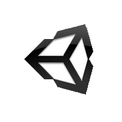

Bachelor Arbeit - Informatik
Automatische Individualisierung eines Avatars mit Hilfe von optischem Tracking
Benjamin Vollmer
Warum individualisierte Avatare?
- Virtual Reality im Trend!
- Avatare verbessern Interaktion (Integration)
- Immersiveres Erleben
- Einfach und ohne großen Aufwand!
Gliederung
- Theorie und Technologie
- Herausforderung und Implementierung
- Live Demo
- Fazit
Theorie und Technologie
- Unity3d
- MakeHuman
- Kinect und ZigFu

Unity3D
- Game-Engine
- Multi-Plattform
- Einfache Steuerung von 3D Elementen
- Einfache Anbindung externer Hardware
Theorie und Technologie
- Unity3d
- MakeHuman
- Kinect und ZigFu

MakeHuman
- Modelling Software
- Einfaches Designen von Avataren
- Automatisches Riggen
Theorie und Technologie
- Unity3d
- MakeHuman
- Kinect und ZigFu
Kinect und ZigFu
- Optische Erfassung des Nutzers
- Trackingdaten
- Anbindung nach Untiy
ZigFu
- Verbindung Kinect zu Unity

Kinect

RGB Farbstrom
Kinect
Skelett-Datenstrom
- 20 Knochen
- bis zu 6 Spieler
- Near Mode
Theorie und Technologie
Gundlage geschaffen für:
- Verarbeitung 3D Objekte
- Erstellen und Riggen von Avataren
- Tracking des Nutzers